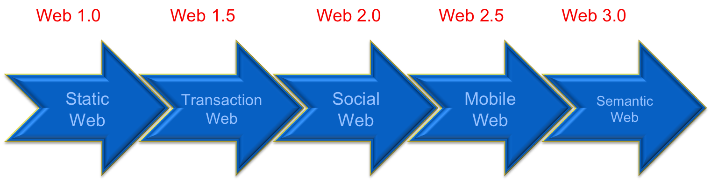

Web 1.0
The first generation of the World Wide Web (read-only web).

Definition of Web 1.0
Web 1.0 refers to the first generation and era of the World Wide Web spanning roughly 1989-2004, characterized by static, read-only websites created and published by developers without mechanisms for user interaction or content contribution. Web 1.0 pages were essentially digital brochures—information flowed one direction from content publishers to passive consumers who could view but not modify or create content. The technology of Web 1.0 was simple: basic HTML structured the content, and HTTP delivered it to browsers. Every website looked similar with limited graphics, slow connections (dial-up modems), and negligible interactivity. Web 1.0 democratized information access, making knowledge available beyond academic and corporate institutions, but the experience was static, slow, and primarily consumed on desktop computers.
Characteristics of Web 1.0
- Static Content: Web pages were pre-generated HTML files with fixed content that rarely changed and never responded to user input
- No User Interaction: No comments, ratings, forms, or user-generated content; content was published by developers only
- Read-Only: Users could only consume content, not contribute or modify it
- Limited Graphics: Slow internet speeds meant minimal images; pages were mostly text with basic formatting
- Desktop-Only: Websites designed for desktop monitors only; no mobile consideration
- Manual Updates: Content changes required developer intervention through file updates and server deployment
- Hierarchical Links: Navigation through predetermined menus and categorized directories rather than free-form linking
Technologies That Enabled Web 1.0
- HTML: Basic hypertext markup for structure and content
- HTTP: Simple protocol for requests and responses
- Static File Hosting: Servers simply served pre-existing HTML files
- Dial-Up Modems: Slow 28.8-56k connections shaped design expectations
- GIF/JPEG Images: Limited graphics formats available and efficient at slow speeds
Examples and Legacy of Web 1.0
- Yahoo! Directory - manually categorized web directory
- Early corporate websites - company information brochures
- News archives - read-only articles without commenting
- Personal homepages - static pages hosted on geocities or similar services
Web 1.0's Historical Significance
Though limited by modern standards, Web 1.0 was revolutionary in democratizing information access and enabling global communication. It proved the viability of hypertext and distributed information systems. The web standards developed during Web 1.0 created the stability that allowed later evolutions. The internet bubble of 1999-2000, while partially driven by Web 1.0 hype, led to consolidation and innovation that eventually produced Web 2.0 technologies.
Key Features
- Static web pages (read-only content)
- No user interaction or comments
- Content created by developers only
- Simple HTML-based websites
Technologies Used
- Basic HTML
- Simple images (GIF, JPG)
- Static hosting servers
Examples
- Early Yahoo! directories
- Early Netscape websites
- Personal static homepages
Web 1.0 = "Read-only Internet"